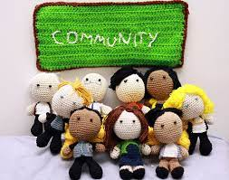
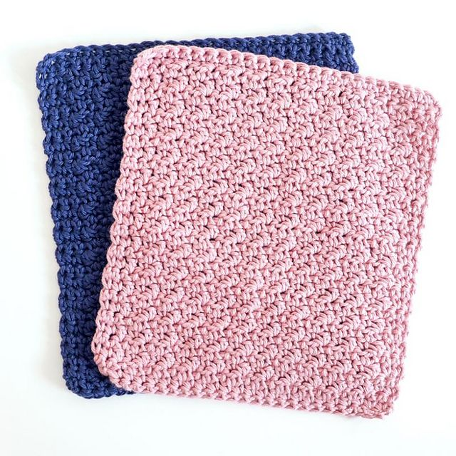

Yarnia is a global online blog, where creatives come to learn how to crochet with free patterns!
Yarnia creates a knitted world where people from beginners, intermediate, or experienced skill levels can find free patterns. You can also buy handcraft pieces that people have created if you’re not interested in making them yourselves. Our company is made from crochet lovers who want everyone to have an easy way to find ways to get into crocheting, and expose more smaller businesses!
Because there we will be launch new patterns every two weeks, the patterns are a suprise! We do take requests to consideration, so please got to contacts to write what pattern you want .
We will make announcements when we collab with other crocheters and gives the best deals for patterns or crocheted pieces.